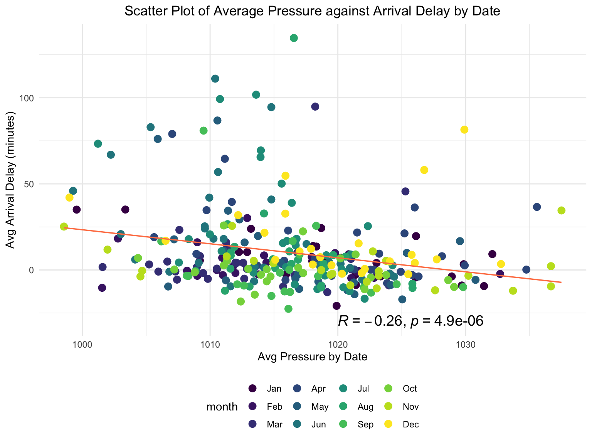
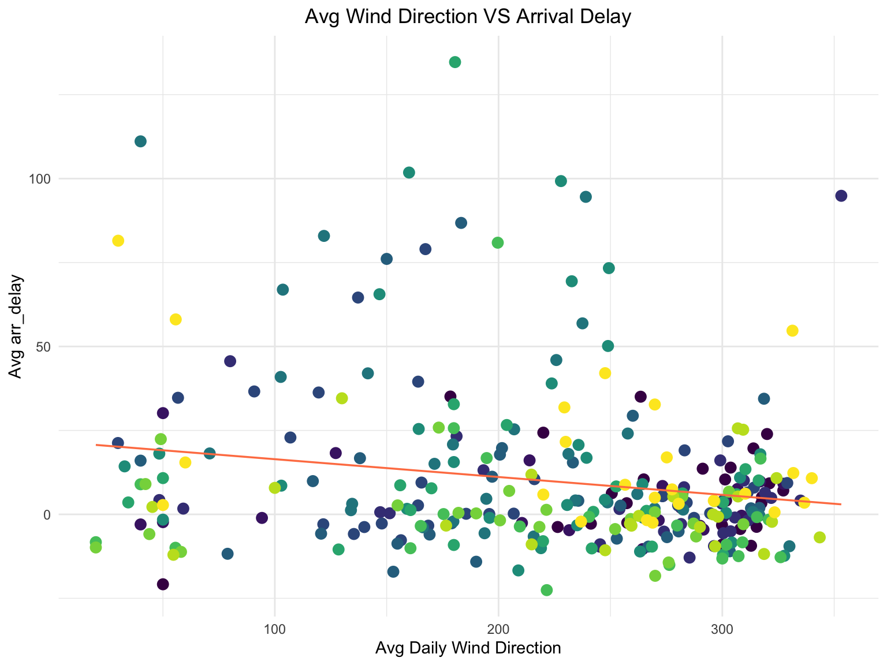
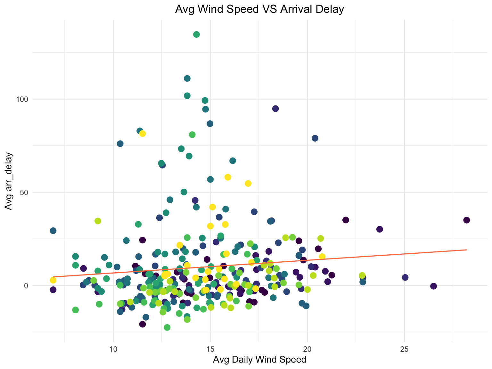

EDA
Si Chen
2023-12-07
library(tidyr)
library(tidyverse)
library(rvest)
library(dplyr)
library(cowplot)
library(gridExtra)
library(RColorBrewer)
library(plotly)
library(corrplot)
library(ggpubr)
library(viridisLite)
knitr::opts_chunk$set(
echo = TRUE,
warning = FALSE,
fig.width = 8,
fig.height = 6,
out.width = "90%"
)
theme_set(theme_minimal() + theme(legend.position = "bottom"))
options(
ggplot2.continuous.colour = "viridis",
ggplot2.continuous.fill = "viridis"
)
scale_colour_discrete = scale_colour_viridis_d
scale_fill_discrete = scale_fill_viridis_ddf_2013 =
read_csv("data/merge_data_2013.csv", show_col_types = FALSE)
# Convert month to factor with levels in ascending order and labels as month abbreviations
df_2013$month <- factor(df_2013$month, levels = 1:12, labels = month.abb[1:12])
df_2013 <- df_2013 %>%
mutate(date = paste(month, day, sep = "_"))
average_delay_by_date <- df_2013 %>%
# group_by(date) %>%
group_by(month, date) %>%
summarise(
avg_arr_delay = mean(arr_delay, na.rm = TRUE),
avg_precip = mean(precip, na.rm = TRUE),
avg_wind_dir = mean(wind_dir, na.rm = TRUE),
avg_wind_speed = mean(wind_speed, na.rm = TRUE),
avg_wind_gust = mean(wind_gust, na.rm = TRUE),
avg_pressure = mean(pressure, na.rm = TRUE),
avg_visib = mean(visib, na.rm = TRUE)
)
# Aggregate the data by month and calculate averages
df_2013_avg <- df_2013 %>%
group_by(month) %>%
summarize(
avg_arr_delay = mean(arr_delay, na.rm = TRUE),
avg_precip = mean(precip, na.rm = TRUE),
avg_wind_dir = mean(wind_dir, na.rm = TRUE),
avg_wind_speed = mean(wind_speed, na.rm = TRUE),
avg_wind_gust = mean(wind_gust, na.rm = TRUE),
avg_pressure = mean(pressure, na.rm = TRUE),
avg_visib = mean(visib, na.rm = TRUE)
)Arrival Delay Summary
dd_hist =
ggplot(data = df_2013, aes(x = arr_delay)) +
geom_histogram(fill = 'skyblue', color = 'coral')+
labs(title = "Histogram of Arrival Delay",
x = "Arrival Delay (minutes)",
y = "Frequency")
dd_hist
Correlation Plot
df_2013 = read.csv("data/merge_data_2013.csv") |>
mutate(month = factor(month, levels = 1:12, labels = month.abb[1:12]))
df_corr = df_2013 |>
select(-year,-flight, -day, -minute, -hour) |>
select_if( is.numeric)
corrplot(cor(df_corr), type="upper", order="hclust",
col=brewer.pal(n=8, name="RdYlBu")) Some highly correlated pair of features such as
Some highly correlated pair of features such as wind_speed
and precip, and air_time and
distance. Thus, in the modeling process, we will only keep
one variable for each pair.
Arrival delay by Destination
# Calculate average arrival delay by destination
avg_arr_delay_by_dest <- df_2013 %>%
group_by(dest) %>%
summarize(avg_arr_delay_dest = mean(arr_delay, na.rm = TRUE)) %>%
arrange(desc(avg_arr_delay_dest)) %>%
head(10)
# Select only the top 6 destinations
top_destinations <- avg_arr_delay_by_dest$dest
# Filter the data for the top 6 destinations
filtered_data <- df_2013 %>% filter(dest %in% top_destinations)
# Create a boxplot for the top 6 destinations
top10_dest =
ggplot(filtered_data, aes(x = reorder(dest, -arr_delay), y = arr_delay, fill = dest)) +
geom_boxplot() +
scale_fill_brewer(palette = "Set3") +
labs(title = "Boxplot of Arrival Delay for Top 6 Destinations",
x = "Destination",
y = "Arrival Delay (minutes)")
top10_dest
Arrival delay by carriers
df_2013 |>
group_by(carrier) |>
mutate(delay_count = if_else(arr_delay >0 , 1, 0)) |>
summarise(delay_count = sum(delay_count)) |>
ggplot(aes(x = carrier,
y = delay_count)) +
geom_bar(stat = "identity", fill = viridis(16)) +
labs(title = "Number of Delays for Each Carrier",
x = "Carrier",
y = "Total Number of Delays")
Arrival Delay by Month
df_2013 |>
group_by(month) |>
mutate(delay_count = if_else(arr_delay >0 , 1, 0)) |>
summarise(delay_count = sum(delay_count)) |>
ggplot(aes(x = month,
y = delay_count)) +
geom_bar(stat = "identity", fill = viridis(12)) +
labs(title = "Number of Delays for Each Month",
x = "Month",
y = "Total Number of Delays")
Months Mar and Apr appear to have the
highest number of delays, and the lowest total number of delays occur in
September.
Arrival Delay & Weekday
df_2013_weekday = read_csv("data/merge_data_2013.csv") |>
mutate(delay_count = if_else(arr_delay >0 , 1, 0),
arrival_date = paste(year,"-",month,"-",day, sep = "")
) |>
mutate(week_date = weekdays(date(arrival_date)))
df_2013_weekday |>
group_by(week_date) |>
summarise(delay_count = sum(delay_count)) |>
ggplot(aes(x = week_date,
y = delay_count)) +
geom_bar(stat = "identity", fill = viridis(7)) +
labs(title = "Number of Delays for Each Carrier",
x = "Weekday",
y = "Total Number of Delays Vs. Weekday")
Arrival Delay & Hour (morning (5-12), afternoon (12-17), evening (17-21), late_night (21-5))
df_2013 |>
mutate(hour = cut(hour,
breaks = c(-Inf, 5, 12, 17, 21, Inf),
labels = c("Late Night", "Morning", "Afternoon", "Evening", "Late Night"),
include.lowest = TRUE
)) |>
group_by(hour) |>
mutate(delay_count = if_else(arr_delay >0 , 1, 0)) |>
summarise(delay_count = sum(delay_count),
avg_delay = mean(arr_delay)) |>
ggplot(aes(x = hour,
y = delay_count, group=1, color=avg_delay)) +
geom_point() +
geom_line() +
labs(title = "Number of Delays Across Parts of Day",
x = "Parts of Day",
y = "Total Number of Delays")
On time arrival rate for NYC airports
Suppose a flight that is delayed for less than 5 minutes is basically “on time”. Assume we onsider any flight delayed for 5 minutes of more to be “delayed”
df_2013 <-
df_2013 %>%
mutate(
ontime = arr_delay < 5
)
df_2013 <-
df_2013 %>%
mutate(
arr_type = ifelse(arr_delay < 5, "on time", "delayed")
)
df_2013 %>%
group_by(origin) %>%
summarise(ontime_prop = sum(ontime == TRUE) / n()) %>%
arrange(desc(ontime_prop)) %>%
knitr::kable(
digits = 3,
col.names = c("Origin", "On-time Proportion")
)| Origin | On-time Proportion |
|---|---|
| LGA | 0.661 |
| JFK | 0.636 |
| EWR | 0.625 |
ggplot(data = df_2013, aes(x = origin, fill = arr_type)) +
geom_bar()+
scale_fill_brewer(palette = "Set3") +
labs(title = "Bar Plot of On-time Arrival for NYC Airports",
x = "Origin",
y = "Count of on-time arrival")The plot shows that LGA airport has the best on time arrival rate and EWR airport has the worst.
Pressure
# Average pressure against average arr_delay by month
pressure_delay_date =
ggplot(average_delay_by_date, aes(x = avg_pressure, y = avg_arr_delay)) +
geom_point(size = 3, aes(x = avg_pressure, y = avg_arr_delay, color = month)) +
geom_smooth(method = "lm", se = FALSE, color = "coral", size = 0.6) +
stat_cor(method = "pearson", label.x = 1020, label.y = -30, size = 5) +
labs(title = "Scatter Plot of Average Pressure against Arrival Delay by Date",
x = "Avg Pressure by Date",
y = "Avg Arrival Delay (minutes)")
pressure_delay_date
The correlation coefficient was -0.26 suggesting a weak negative correlation between pressure (mmhg) and arrival delay in minutes. While the p-value is significantly small, it may be driven by a large sample size (n=72,734).
Visibility
df_2013 |>
group_by(visib) |>
mutate(count_delay = if_else(arr_delay>0 , 1, 0)) |>
summarise(avg_delay = mean(arr_delay),
number_of_delays = sum(count_delay)
) |>
ggplot(aes(x=visib,
y=avg_delay, color=number_of_delays))+
geom_point() +
labs(title = "Arrival Delay Vs. Visibility",
x = "Visibility",
y = "Average of Delay") 
Wind
wind_dir_delay_date
wind_speed_delay_date
wind_gust_delay_date